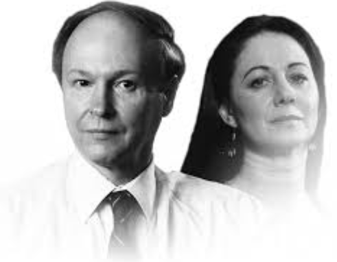

Fundadores da Cisco
A Cisco foi fundada em 1984 por Sandy Lerner e Leonard Bosack, então funcionários da Universidade de Stanford. Eles criaram um roteador capaz de conectar redes locais distintas, o que se tornaria a base da internet moderna.
O projeto inicial começou em casa, e logo evoluiu para a criação de uma empresa que revolucionaria o setor de redes e telecomunicações. Lerner cuidava da parte administrativa e Bosack liderava o desenvolvimento técnico.
Mesmo com saídas controversas em 1990, sua contribuição foi essencial para o sucesso inicial da Cisco. Hoje, são lembrados como pioneiros da conectividade digital.